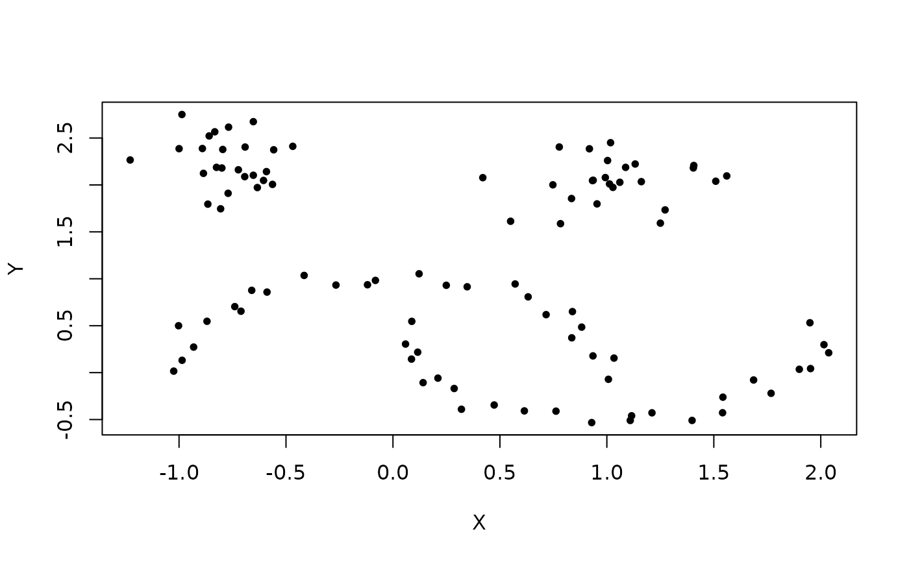

Contains 100 2-d points, half of which are contained in two moons or
"blobs"" (25 points each blob), and the other half in asymmetric facing
crescent shapes. The three shapes are all linearly separable.
A data frame with 100 observations on the following 2 variables.
- X
a numeric vector
- Y
a numeric vector
Details
This data was generated with the following Python commands using the
SciKit-Learn library:
import sklearn.datasets as data
moons = data.make_moons(n_samples=50, noise=0.05)
blobs = data.make_blobs(n_samples=50,
centers=[(-0.75,2.25), (1.0, 2.0)],
cluster_std=0.25)
test_data = np.vstack([moons, blobs])
References
Pedregosa, Fabian, Gael Varoquaux, Alexandre Gramfort,
Vincent Michel, Bertrand Thirion, Olivier Grisel, Mathieu Blondel et al.
Scikit-learn: Machine learning in Python. Journal of Machine Learning
Research 12, no. Oct (2011): 2825-2830.
Examples
data(moons)
plot(moons, pch=20)
